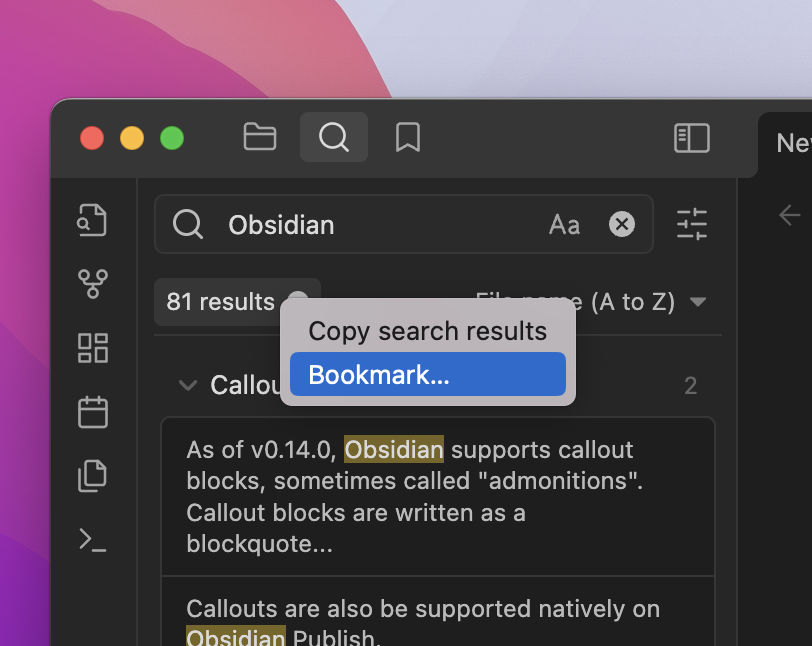
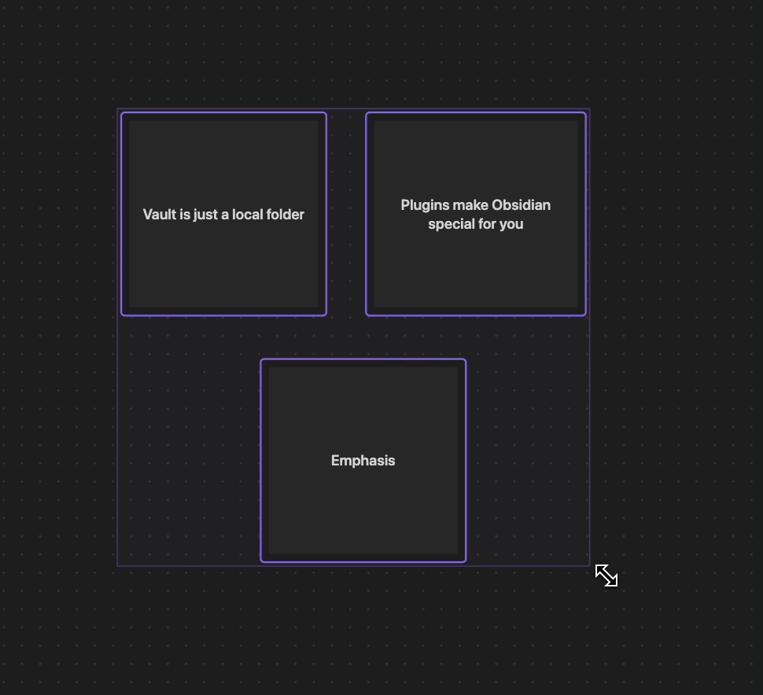

Shift + A-Z.In this update, we revisited some of our older core plugins and provided more than just a fresh coat of paint. Most notably, the Starred plugin is going away in favor of its successor: Bookmarks.
The Starred core plugin is going away. Introducing: Bookmarks.
Bookmark just about anything in Obsidian: files, folders, graphs, searches, headings, blocks. Organize your bookmarks in the much more robust Bookmark view. Reorder bookmarks with drag-and-drop. Create Bookmark Groups to organize your bookmarks into collapsible sections.
We've reorganized the Search UI to make things more intuitive and make room for more options. Like being able to bookmark search queries right from here:
[[folder/file]] will expand to [[folder/file|file]])[[folder/file]] will expand to [[folder/file|file]])This update primarily focuses on Canvas improvements and overall bug fixes within the app.
We've made a lot of improvements to Canvas since its initial release.
Arranging cards on your canvas is now easier than ever. You can now resize multiple cards at once by dragging from the selection box. You can also nudge selected cards in any direction by pressing the arrow keys.

Once you have your cards arranged exactly how you like them, you can use the new readonly mode to lock your canvas content in place. While in readonly mode, a canvas and its contents cannot be modified.
There is now a settings page for Canvas with the following configuration options:
Ctrl/Command + Drag.Content from text cards will now appear as search results in the global search view.
Canvas groups can now have a background image associated with them. With a group selected, press the new "set background" button and choose an image from your vault.
The image can be set to cover the entire group or be used as a repeating pattern.
The new "Jump to group" command allows you to search for groups in your open Canvas by name. Selecting a group will quickly pan the viewport to that group. Some other notable improvements to Canvas:
Similarly to the "Narrow to heading..." feature, there is now a "narrow to block" menu item for file cards in the Canvas. Just right-click on a file card and choose "Narrow to block..." to see a list of all blocks in the given file. Selecting a block from the list will change the card to only display the contents of that block.
[[dashboard.canvas]]) doesn't exist. Previously a Markdown file called dashboard.canvas would get created.file: operator not working for canvas files.Enter twice to escape a sublist.[[dashboard.canvas]]) doesn't exist. Previously a Markdown file called dashboard.canvas would get created.Command-W closing the entire app instead of closing the current tab.Shift to move the cards at a greater multiple.Ctrl/Command + DragMenu.showAtPosition not working when user has enabled "native menus."The installer has been updated to use Electron v21 (requires downloading the latest installer).
obsidian://new URIs from creating folders outside of the vault.Ctrl/Cmd + Z) would undo the file rename in addition to undoing an action on the Canvas.![[some note]]).Ctrl/Cmd + Z) or paste (Ctrl/Cmd + V).![[daily_notes.canvas]]) or embedded on another canvas.Ctrl/Cmd+F) now works inside cards embedded in the canvas.Ctrl/Cmd-click the card label.Ctrl/Cmd + Drag now shows a menu to quickly add a card or create a group where your selection is.Ctrl to duplicate the selection instead of Alt. On macOS, this is still Option+Drag.